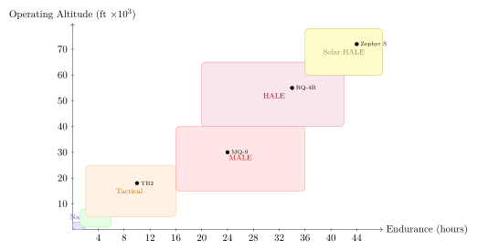

Chapter 2: Drone Classification and Types¶
2.1 Drone Classification and Types¶
Epigraph
“The unmanned vehicle is not a single technology but a broad family of systems whose diversity rivals that of manned aviation itself.”
— General Atomics Aeronautical Systems, Program Overview, 2019
The explosion of unmanned aerial vehicle (UAV) development over the past three decades has produced an extraordinarily diverse family of aircraft spanning six orders of magnitude in mass, from the 16-gram Black Hornet nano-drone to the 14,628-kg Northrop Grumman RQ-4B Global Hawk. Before a meaningful technical discussion of individual types can proceed, it is essential to establish the classification frameworks used by military planners, regulatory agencies, and standards bodies. This chapter presents those frameworks and then examines each major category of unmanned vehicle in rigorous engineering detail, covering aerodynamics, structural design, propulsion, dynamics, avionics, and representative systems with full specifications.
Throughout this chapter the terms UAV (Unmanned Aerial Vehicle), UAS (Unmanned Aircraft System, which includes the ground segment), and RPAS (Remotely Piloted Aircraft System, the ICAO preferred term) are used interchangeably. The term drone is used in its informal, widely understood sense covering all categories.
2.1.1 Classification Frameworks¶
NATO Size Classifications (Classes I, II, III)¶
NATO standardization agreement STANAG 4670 divides unmanned air vehicles into three broad size classes based on maximum take-off weight (MTOW), operating altitude, and typical operational radius. These boundaries are not rigid—they represent doctrinal groupings that inform logistics, support infrastructure, and command authority rather than hard engineering cutoffs.
| Class | Category | MTOW (kg) | Alt. (ft AGL) | Radius (km) | Examples |
|---|---|---|---|---|---|
| I | Micro | \(<2\) | \(<200\) | \(<5\) | Black Hornet, Mavic |
| Mini | \(2\)–\(20\) | \(<3000\) | \(<25\) | RQ-7 Shadow 200 | |
| Small | \(20\)–\(150\) | \(<5000\) | \(<50\) | ScanEagle, Aerosonde | |
| II | Tactical | \(150\)–\(600\) | \(<10000\) | \(<200\) | Hermes 450, Heron I |
| TB2 Bayraktar | |||||
| III | MALE | \(>600\) | \(<45000\) | \(>200\) | MQ-9 Reaper |
| HALE | \(>600\) | \(>45000\) | Persistent | RQ-4 Global Hawk |
Class I
systems are man-portable, typically launched by hand or from a pneumatic rail. The entire system (air vehicle, GCS, and associated equipment) can be carried by a single dismounted soldier or a small team. Class I encompasses three sub-tiers: micro (\(<2\) kg), mini (2–20 kg), and small (20–150 kg). Aerodynamic Reynolds numbers for micro-class vehicles range from \(10^3\) to \(10^5\), requiring specialized low-\(Re\) airfoil sections and creating challenges for conventional fixed-wing lift generation.
Class II
vehicles are tactical platforms transported by light vehicle. They require a small ground crew (typically 4–8 personnel), a dedicated launch/recovery element, and a portable GCS. Endurance typically ranges from 10 to 30 hours; payload capacity 20–100 kg. These systems typically operate at medium altitudes (3,000–15,000 ft AGL) within line-of-sight (LOS) or beyond-LOS via satellite relay.
Class III
covers the heavy, strategic-tier platforms: MALE (Medium Altitude Long Endurance) and HALE (High Altitude Long Endurance). These are operationally equivalent to manned ISR and strike aircraft in footprint and basing requirements. A HALE platform such as the RQ-4B requires a 10,000-ft runway, jet fuel infrastructure, and a globally networked C2 architecture.
STANAG 4586 Autonomy Levels 1–10¶
STANAG 4586 defines the Universal Control System (UCS) architecture for UAVs and introduces the Levels of Interoperability (LOI). Separately, the Joint Architecture for Unmanned Systems (JAUS) and US DoD guidance define a 10-level autonomy scale. The scale below synthesizes NATO and US DoD definitions and is widely referenced in academic and defence literature.
| Level | Name | Description and Human–Machine Interaction |
|---|---|---|
| 1 | Remotely Guided | Human operator directly controls all vehicle functions in real time. No onboard decision-making. Classic RC aircraft model. Operator translates stick inputs directly to control surface deflections. Any control interruption results in loss of vehicle. |
| 2 | Real-Time Health Diagnosis | Vehicle monitors its own health and alerts the human operator to faults (e.g., engine temperature anomaly, low battery) but takes no autonomous corrective action. The human receives diagnostic telemetry and decides on response. |
| 3 | Adaptable | Vehicle can adapt pre-planned paths to avoid known obstacles or degraded flight states (e.g., geo-fence boundary avoidance, terrain-following). Human approves adaptation or can override. Flight management system-level autonomy only. |
| 4 | Fault Tolerant | Vehicle detects system faults and autonomously executes pre-defined contingency actions (return-to-home, controlled descent) without human instruction. The human is notified but not required to intervene. |
| 5 | Real-Time Multi-Vehicle Cooperation | Multiple UAVs share state information and coordinate behaviours (deconflict flight paths, share sensor data) under human supervisory authority. Swarm deconfliction at formation-flight level. |
| 6 | Real-Time Automatic Re-tasking | Vehicle autonomously re-prioritises mission tasks based on updated environmental data, threat information, or mission priority changes while keeping human in the strategic decision loop. |
| 7 | Group Strategic Goals | Groups of vehicles develop and execute cooperative strategies to achieve operator-defined high-level objectives. Human defines end-state; machines plan and sequence the campaign. |
| 8 | Distributed/Collaborative | Fully distributed decision-making without a central controller. Individual vehicles within a swarm make local decisions consistent with global swarm objectives. Human provides initial objectives only. |
| 9 | Fully Autonomous | Vehicle/swarm plans, executes, and adapts a complete mission without any human input from launch to recovery. Includes lethal force decisions in combat contexts (under pre-approved ROE). |
| 10 | Fully Autonomous with Self-Modification | Theoretical limit: vehicle modifies its own mission objectives and decision rules in response to emergent battlefield conditions. Not currently deployed; significant legal and ethical barriers. |
Most fielded military systems operate at Levels 3–5. Loitering munitions such as the Harop operate at approximately Level 6 in their autonomous terminal attack mode. The transition from human-on-the-loop (Levels 6–7) to human-out-of-the-loop (Levels 8–10) represents the central ethical and legal challenge in autonomous weapons development, addressed in Chapter 22.
ICAO RPAS Categories¶
The International Civil Aviation Organisation (ICAO) employs the RPAS framework (Doc 10019) for civil airspace integration. ICAO avoids the term “drone” in formal contexts. Key ICAO constructs include:
- RPAS
- Remotely Piloted Aircraft System — the complete system including the RPA, its associated remote pilot station(s), the required command and control links, and any other components as specified in the type design.
- RPA
- Remotely Piloted Aircraft — the airborne element only.
- Remote Pilot Station (RPS)
- The component of the RPAS containing the equipment used to pilot the RPA.
- C2 Link
- Command and Control Link — the data link between the RPS and the RPA for the purposes of managing the flight.
ICAO categorises RPAS by operational environment (urban/suburban/rural), flight rules (IFR/VFR), and whether operations are within or beyond visual line of sight (VLOS/BVLOS). Member states implement these into national frameworks (e.g., EASA UAS Regulations (EU) 2019/945, FAA Part 107 in the United States, CAA CAP 722 in the UK).
The EASA three-category risk system is particularly influential:
-
Open Category: Low-risk operations, MTOW \(<25\) kg, VLOS, pre-defined subcategories A1–A3 by proximity to persons. No prior authorisation required.
-
Specific Category: Medium-risk operations requiring an operational authorisation or, for standard scenarios, a declaration. Covers most commercial UAS operations including BVLOS and heavier aircraft.
-
Certified Category: High-risk or high-complexity operations equivalent in safety stringency to manned aviation. Required for UAS operating over assemblies of people, carrying passengers, or used in emergency response.
Military vs Civil Distinctions¶
Military UAVs differ from civil RPAS not merely in payload but in fundamental design philosophy. Table 2.3 summarises the principal differences.
| Attribute | Military | Civil/Commercial |
|---|---|---|
| Regulatory framework | MIL-STDs, DEF-STAN, STANAG | ICAO, EASA, FAA Part 107 |
| Airworthiness basis | Military type certificate or JSTO | Civil type certificate |
| Survivability | Redundant systems, EW hardening | Mean Time Between Failure (MTBF) |
| Signature management | LO shaping, RAM coatings | Not required |
| Datalink | Encrypted, anti-jam, ECCM | Commercial RF, Wi-Fi, 4G/5G |
| Payload | Weapons, ISR, EW | Cameras, LiDAR, cargo |
| Export controls | ITAR, EAR, MTCR | Dual-use controls |
| Operational altitude | Up to 65,000 ft (HALE) | Typically \(<400\) ft AGL (civil) |
| Cost per unit | $1M–$220M+ | $100–$500,000 |
| Reliability target | Mission-critical | Commercial grade |
Weight-Based Size Categories¶
The weight-based taxonomy used throughout the technical community is as follows.
- Nano (\(<50\) g)
- Insects-scale MAVs (Micro Air Vehicles). Reynolds numbers \(Re = 10^2\)–\(10^4\). Dominated by viscous effects; conventional fixed-wing aerodynamics inapplicable. Flapping-wing (ornithopter) or rotary approaches required. Battery energy density is the primary limiting factor: at \(<50\) g, the structural and propulsion mass fraction leaves very little for batteries, yielding flight times of minutes. Examples: Harvard RoboBee (80 mg), Festo BionicFlyingFox analogue.
- Micro (50 g–2 kg)
- Includes hand-launched mini fixed-wing and micro-quadrotors. \(Re = 10^4\)–\(10^5\); thin, cambered airfoils. Commercial leaders include DJI Mini 4 Pro (249 g, staying below the EASA 250 g registration threshold by design). Military: Prox Dynamics Black Hornet 3 (32 g).
- Mini (2–25 kg)
- The workhorse of commercial and light tactical UAV operations. Includes DJI Matrice 30T (3.77 kg) and VTOL fixed-wing survey platforms. Aerodynamics move into the transitional-to-turbulent regime (\(Re = 10^5\)–\(5\times10^5\)).
- Tactical (25–600 kg)
- Spans small tactical (RQ-7 Shadow, 170 kg MTOW) through medium-class (Hermes 450, 550 kg). These platforms require vehicle-transportable GCS and dedicated launch/recovery equipment.
- MALE (Medium Altitude Long Endurance, 600 kg–3,000 kg)
- Operates at 10,000–30,000 ft MSL; endurance 24–40 h. Examples: MQ-9 Reaper (4,760 kg, straddling MALE/heavy), Bayraktar TB2 (650 kg), IAI Heron TP (4,650 kg).
- HALE (High Altitude Long Endurance, \(>\)MALE ceiling)
- Operates above 45,000 ft MSL; designed for multi-day persistent ISR. Examples: RQ-4B Global Hawk (14,628 kg), Northrop Grumman BAMS-D, Airbus Zephyr S (solar, 75 kg but HALE by altitude/endurance). Note that HALE is defined by operational envelope rather than weight alone.
Endurance–Altitude Matrix¶
Figure 2.1 conceptually maps major UAV categories onto an endurance vs operating altitude plane. The diagonal bands reflect the fundamental aerodynamic and propulsion trade-off: longer endurance requires either more fuel/energy (hence greater MTOW) or greater aerodynamic efficiency (\(L/D\)), which is best achieved at high altitude where induced drag dominates and aspect ratio can be maximised. Solar-electric platforms such as the Zephyr S occupy a unique corner at maximum altitude and theoretically infinite endurance (limited by component life rather than energy).

2.1.2 Fixed-Wing UAVs¶
Fixed-wing UAVs achieve lift through an aerodynamic wing rather than through powered rotor thrust. This approach is fundamentally more efficient for sustained cruise flight: a fixed wing converts forward motion into lift without continuously expending power to counteract gravity, in contrast to a helicopter rotor that must continuously generate thrust even in level flight. The result is dramatically superior range and endurance at the cost of vertical take-off/landing (VTOL) capability.
Aerodynamic Fundamentals and Lift Generation¶
For a fixed-wing vehicle in steady level flight, the lift equation gives:
where \(\rho\) is air density (kg/m\(^3\)), \(V\) is true airspeed (m/s), \(S\) is wing planform area (m\(^2\)), \(C_L\) is the lift coefficient (dimensionless), and \(W\) is the vehicle weight (N). Drag in level flight is:
where \(C_{D_0}\) is the zero-lift (parasite) drag coefficient, \(e\) is the Oswald span efficiency factor (0.7–0.95 for practical wings), and \(AR = b^2/S\) is the aspect ratio with \(b\) the wingspan. The lift-to-drag ratio, a primary figure of merit for fixed-wing efficiency, is:
High-AR wings (long and narrow) are therefore preferred for endurance missions. The RQ-4B Global Hawk achieves \(AR \approx 25\), comparable to a sailplane, while the MQ-9 Reaper uses \(AR \approx 17\). Combat aircraft, by contrast, use \(AR = 3\)–\(5\) for maneuverability and structural compactness.
Conventional Tractor and Pusher Configurations¶
The dominant propulsion installation choices for fixed-wing UAVs are tractor (propeller forward) and pusher (propeller aft) configurations. Each has distinct advantages and disadvantages.
| Attribute | Tractor | Pusher |
|---|---|---|
| Propulsive efficiency | High — propeller operates in undisturbed air | Slightly lower — propeller ingests turbulent wake |
| Engine cooling | Excellent — engine in undisturbed flow | More challenging — requires dedicated ducting |
| Payload bay forward fuselage | Limited — propeller arc conflicts with EO/IR | Excellent — unobstructed forward hemisphere |
| Sensor field of view | Limited nose access | Wide, unobstructed nose for sensor suite |
| Ground clearance (prop) | Critical for soft-field ops, requires taller gear | Better rear prop clearance |
| Emergency landing risk | Engine damage on nose-over | Prop shielded in pusher; airframe absorbs energy |
| Noise | Propeller ahead of wing reduces wing-scatter noise | Increased noise from wake ingestion |
| CG management | Engine mass ahead of CG helps longitudinal balance | Aft-mounted engine may cause CG challenges |
| Examples | Aerosonde, Predator A (early) | RQ-7 Shadow, ScanEagle, Bayraktar TB2 |
The pusher configuration dominates tactical and larger ISR UAVs precisely because the unobstructed nose permits the installation of a multi-sensor turret (EO/IR, SAR antenna) with a 360\(^\circ\) unimpeded azimuth field of regard. The payload may also be mounted in a chin position below the nose, again unobstructed by the propulsion system.
Flying Wing and Blended Wing Body¶
Flying Wing
The flying wing eliminates the conventional fuselage and tail, with the entire lifting surface providing both lift and internal volume. The aerodynamic advantages are significant:
-
Reduced wetted area: No fuselage wetted area; all external surface contributes to lift. Zero-lift drag (\(C_{D_0}\)) is minimised.
-
Reduced interference drag: Wing-body and wing-tail junctions eliminated.
-
Radar signature: Blended surfaces and absence of right-angle corner reflectors dramatically reduce radar cross-section (RCS).
-
Structural efficiency: The wing root carries both aerodynamic and bending loads, potentially allowing lighter structures.
Disadvantages include inherently relaxed longitudinal stability (or intentional instability requiring fly-by-wire), limited control authority without a horizontal tail, and pitch-moment coupling challenges when using trailing-edge controls for both lift and pitch.
The Northrop Grumman B-2 Spirit pioneered the flying wing for combat aircraft; its unmanned successor concept, the RQ-180, is believed to employ a similar planform. The X-47B UCAS demonstrator (wingspan 18.9 m) used a cranked-kite flying wing optimised for carrier operations and low observability.
Blended Wing Body (BWB)
The BWB concept smoothly transitions between the central body (providing payload volume) and the outboard wings (providing lift), eliminating the sharp wing-body junction. The aerodynamic ideal is that the entire wetted surface contributes to lift. Boeing’s X-48 demonstrator achieved \(L/D > 20\) in wind tunnel testing, compared to \(\approx 18\) for a conventional tube-and-wing commercial airliner. For UAV applications, the BWB offers reduced RCS and superior volumetric efficiency — the central thickened chord allows deep internal weapon bays without protruding stores. The primary challenge is the control law complexity required to manage the coupled pitch-roll-yaw dynamics of a non-tail-aft configuration.
Major Fixed-Wing UAV Systems — Detailed Specifications¶
| System | MTOW (kg) | Wingspan (m) | Endurance (h) | Ceiling (ft) | Speed (kt) | Payload (kg) | Propulsion |
|---|---|---|---|---|---|---|---|
| RQ-4B Global Hawk | 14,628 | 39.9 | 34+ | 60,000 | 357 | 1,360 | Rolls-Royce AE3007H turbofan |
| MQ-9A Reaper | 4,760 | 20.1 | 27 | 50,000 | 240 | 1,700 | Honeywell TPE331-10 turboprop |
| MQ-1C Gray Eagle | 1,633 | 17.0 | 25 | 29,000 | 167 | 488 | Thielert TAE 125-02 diesel |
| MQ-1B Predator | 1,020 | 14.8 | 40 | 25,000 | 117 | 204 | Rotax 914F piston |
| RQ-7B Shadow 200 | 170 | 6.4 | 9 | 15,000 | 109 | 27 | UEL AR801 Wankel |
| Bayraktar TB2 | 650 | 12.0 | 27 | 27,030 | 70 (cruise) | 150 | Rotax 912iS |
| IAI Heron I | 1,150 | 16.6 | 52 | 30,000 | 100 | 250 | Rotax 914 |
| IAI Hermes 900 | 1,180 | 15.0 | 36 | 30,000 | 107 | 300 | Rotax 914 |
| ScanEagle | 22 | 3.1 | 24+ | 19,500 | 80 | 3.4 | 3W-28i piston |
| Aerosonde Mk 4.7 | 25 | 3.0 | 48 | 20,000 | 65 | 5 | Yamaha 3W piston |
| RQ-170 Sentinel | \(\sim\)3,860 | \(\approx\)20 | \(\sim\)6 | 50,000 | \(\sim\)400 | classified | Turbofan |
RQ-4B Global Hawk
The Global Hawk is the pre-eminent HALE ISR platform of the Western world. It is powered by a Rolls-Royce AE3007H high-bypass turbofan producing 31.4 kN of thrust. Its Integrated Sensor Suite (ISS) combines a Raytheon HISAR (Hughes Integrated Surveillance & Reconnaissance) SAR/MTI radar, an EO/IR camera, and a SIGINT collection suite. The vehicle can image 40,000 nautical miles\(^2\) per day in SAR mode or 1,900 nm\(^2\)/day in spot mode. The wing achieves \(AR = 25\), requiring robust structural design using composites (carbon fibre primary structure). The wing spar carries bending moments exceeding 500 kN\(\cdot\)m at the root during maximum-\(g\) manoeuvres, demanding large-tow carbon fibre laminates with carefully balanced \(\pm 45^\circ\) and \(0^\circ\) plies for combined bending and torsion.
MQ-9A Reaper
The Reaper represents the evolution from pure ISR to the multi-role ISR/strike concept. It carries up to 1,700 kg of external stores on six hardpoints: four underwing and two wingtip. Typical loadout includes two AGM-114 Hellfire missiles and two GBU-12 Paveway II LGBs, or up to four Hellfires. The Honeywell TPE331-10 turboprop delivers 900 shp, giving the aircraft a thrust-to-weight ratio of approximately 0.13 at MTOW — low, but adequate for a loitering platform. The MTS-B (Multi-Spectral Targeting System) sensor turret provides EO, IR, laser designator, and laser illuminator in a single 16-inch diameter ball.
Bayraktar TB2
The TB2 achieved global prominence through its combat effectiveness in Libya (2019–2020), Nagorno-Karabakh (2020), and Ukraine (2022). Designed by Turkish engineer Selcuk Bayraktar, it uses a pusher configuration with the Rotax 912iS engine, carbon fibre monocoque fuselage, and a nose-mounted Aselsan MX-15Di EO/IR/laser turret. Four MAM-L or MAM-C Smart Micro Munitions provide precision strike capability with a warhead mass of 10–22 kg. At a unit cost of approximately $2 million (compared to $32 million for an MQ-9), the TB2 democratised precision strike capability for medium powers.
Breguet Endurance and Range Equations¶
The Breguet endurance and range equations, originally derived for manned aircraft, apply directly to fixed-wing UAVs with appropriate substitutions.
Propeller-Driven Endurance
For a propeller-driven UAV, endurance is maximised at the speed that minimises power required (not drag). The Breguet endurance equation is:
where \(\eta_p\) is propulsive efficiency (typically 0.75–0.88 for fixed-pitch propellers, 0.82–0.92 for variable-pitch), \(c_P\) is the specific fuel consumption (kg/W\(\cdot\)s or equivalent), \(C_L^{3/2}/C_D\) is the endurance parameter (maximised by flying slower than \(V_{(L/D)_\text{max}}\)), \(\rho\) is air density, \(S\) is wing area, \(W_i\) and \(W_f\) are initial and final weight. Expanding:
The takeaway is clear: to maximise endurance, an aircraft should fly at high \(AR\) (achieved by long, narrow wings), low \(C_{D_0}\) (smooth surfaces, minimal wetted area), and at moderate \(C_L\) (requires lower speeds and/or higher altitude for thin air). All of these design objectives point toward the HALE platform archetype.
Jet-Powered Range (Breguet)
For jet-powered UAVs (Global Hawk, combat UAS):
where \(c_T\) is thrust specific fuel consumption (TSFC, kg/N\(\cdot\)s). For the RQ-4B, with \(C_L/C_D \approx 28\), TSFC \(\approx 0.36\) lb/(lbf\(\cdot\)h), initial weight 14,628 kg and fuel fraction \(\approx 0.52\):
This is consistent with the publicly reported maximum range of \(>22{,}000\) km for the RQ-4B variant.
Loiter Performance and Range–Endurance Trade¶
Loiter endurance and range represent competing objectives. Speed that maximises range (\(V_{(L/D)_{\max}}\)) is approximately \(\sqrt{2}\) times the speed that maximises endurance. For a UAV required to provide persistent area surveillance, the designer must trade mission radius against station time at the ISR area. The loiter fraction \(f_\ell\) of total endurance is:
For the Global Hawk, supporting a 5,000 nm transit to theatre, loiter at station represents approximately 60% of total mission time. Aerial refuelling, if implemented, would allow 100% of fuel to be spent on station — a capability pursued for the MQ-9 ER (Extended Range) and the proposed MALE replacement programmes.
2.1.3 Rotary-Wing UAVs¶
Rotary-wing UAVs generate lift and control through rotating blades rather than a forward-motion wing. This enables vertical take-off and landing (VTOL) and stationary hover, capabilities unavailable to pure fixed-wing aircraft. The engineering price is substantially lower aerodynamic efficiency: the induced power required to hover is far greater than the power required to cruise in level flight at the same gross weight.
Hover Aerodynamics and Figure of Merit¶
In hover, a rotor of disk area \(A = \pi R^2\) (with \(R\) the rotor radius) must produce thrust \(T = W\) (gross weight) by accelerating an air mass downward. Momentum theory gives the ideal induced velocity through the disk:
The ideal power required is:
The actual power required exceeds this by profile drag of the blades and non-uniform inflow. The Figure of Merit (FM) quantifies rotor efficiency in hover:
where \(C_T = T/(\rho A (\Omega R)^2)\) and \(C_P = P/(\rho A (\Omega R)^3)\) are the thrust and power coefficients, and \(\Omega\) is the rotor angular velocity. A well-designed rotor achieves FM = 0.75–0.82; values above 0.85 are exceptional.
Power Loading
A more accessible metric is power loading \(P_L = T/P\) (N/W or lb/hp). Higher power loading means less power per unit thrust:
This shows that power loading increases with rotor area \(A\). A large rotor disk is therefore more efficient — the reason helicopters with large, slowly turning rotors are more efficient than multi-rotors with small, fast-turning propellers.
Disk Loading
The disk loading \(DL = T/A\) (Pa or lb/ft\(^2\)) is the complementary metric. High \(DL\) means high downwash velocity and high induced power.
-
Helicopter (MQ-8): \(DL \approx 200\) N/m\(^2\), hover \(FM > 0.75\)
-
Quadrotor (DJI Matrice 30T): \(DL \approx 220\) N/m\(^2\)
-
Quadrotor (DJI Mini 4): \(DL \approx 60\) N/m\(^2\)
-
Hummingbird: \(DL \approx 15\) N/m\(^2\) (illustrative natural comparison)
Conventional Helicopter Configuration¶
The single main rotor with tail rotor (SMRR) is the archetypal helicopter configuration. The tail rotor counteracts the torque reaction of the main rotor on the fuselage, consuming approximately 8–12% of installed engine power. Control is achieved through collective pitch (uniform blade pitch change, controlling total thrust), cyclic pitch (periodic blade pitch variation, tilting the rotor disk to produce a horizontal force component), and tail rotor collective (yaw authority).
MQ-8B/C Fire Scout
The Northrop Grumman MQ-8B is the primary naval helicopter UAV in US service. Based on the Schweizer 333 airframe, it is powered by a Rolls-Royce 250-C20W turboshaft (420 shp) and has MTOW of 1,430 kg (MQ-8C, Bell 407-derived, MTOW 2,722 kg). Endurance is 8 h (B model) and 14 h (C model). The sensor suite includes a Raytheon MTS-B turret. The MQ-8C carries up to four AGM-176 Griffin missiles or two Hellfire missiles.
Key helicopter UAV engineering challenges include:
-
Vibration: Main rotor harmonics (typically \(N\Omega\), \(2N\Omega\), etc.) propagate through the airframe and degrade sensor performance. Active vibration control systems (e.g., HHC — Higher Harmonic Control) are required.
-
Ground resonance: A coupled instability between the rotor lead-lag mode and the airframe on the ground. Requires careful mechanical design (lag dampers, symmetric placement) or active suppression.
-
Autorotation: Loss of engine power must be managed by collective pitch reduction to maintain rotor RPM, then flare before touchdown. Autonomous autorotation is a significant FCS challenge.
Coaxial and Synchropter Configurations¶
Coaxial
Two rotors on a common shaft rotating in opposite directions cancel torque and eliminate the tail rotor. The advantages are:
-
No tail rotor power loss (\(\approx 10\)% power recovery)
-
Shorter overall footprint (no tail boom required)
-
Inherent yaw control via differential collective pitch between upper and lower rotor
-
Higher hover efficiency due to lower disk loading for same diameter
Disadvantages include the complex mechanical hub required for opposite-rotating concentric shafts and the aerodynamic interaction between the two rotor disks (the lower rotor operates in the downwash of the upper, reducing its efficiency by approximately 15–20%). The Kamov Ka-137 coaxial saucer-shaped UAV (MTOW 280 kg, payload 80 kg) exploits coaxial design for a compact, stable ISR platform.
Intermeshing (Synchropter)
Two rotors on separate, slightly inward-canted shafts intermesh without collision (achieved through precise gearbox synchronisation). This eliminates the tail rotor like the coaxial but avoids the unfavourable aerodynamic interaction since the rotors are offset laterally. The Kaman K-MAX (MTOW 2,722 kg) is the foremost example; its unmanned variant was used by the US Marines in Afghanistan for cargo resupply.
Tail Rotor vs NOTAR vs Coaxial Anti-Torque¶
| System | Tail Rotor | NOTAR | Coaxial |
|---|---|---|---|
| Principle | Thrust-producing rotor on tail boom | Circulation control via tangential jet on tail boom | Counter-rotating upper/lower rotor |
| Power consumed | 8–12% total power | 4–5% (fan blowing) | 0% (reaction cancellation) |
| Noise signature | Significant (tail rotor BVI noise) | Quiet (no exposed rotor) | Moderate |
| FOD risk | High (tail rotor strikes objects) | Low | Low |
| Mechanical complexity | Moderate (tail drive shaft) | Low (internal fan only) | High (concentric shaft hub) |
| UAV examples | MQ-8B, K-MAX | MD 500 derivative UAS | Kamov Ka-137 |
2.1.4 Multi-Rotor UAVs¶
Multi-rotor UAVs use three or more fixed-pitch (or variable-pitch) rotors to generate lift, with attitude and position control achieved by varying the relative rotational speed of individual motors. The absence of cyclic pitch collective mechanical systems dramatically simplifies mechanical design and reduces manufacturing cost, enabling the consumer UAV revolution of 2010–2025.
Quadrotor Dynamics: Newton–Euler Equations of Motion¶
Consider a quadrotor with four rotors located at positions \(\pm d/\sqrt{2}\) along the body \(x\)- and \(y\)-axes (symmetric \(+\) configuration). Motors 1 and 3 rotate counter-clockwise (CCW); motors 2 and 4 rotate clockwise (CW). Let: \(\omega_i\) (\(i = 1,2,3,4\)) be the angular speed of rotor \(i\), \(k_T\) the thrust coefficient, \(k_Q\) the drag/torque coefficient, and \(l\) the arm length (centre to motor). The forces and moments produced are:
The state vector is \(\mathbf{x} = [x,y,z,\phi,\theta,\psi,\dot{x},\dot{y},\dot{z}, \dot{\phi},\dot{\theta},\dot{\psi}]^T\) and the Newton–Euler equations in body frame are:
where \(\mathbf{R} \in SO(3)\) is the rotation matrix from body to inertial frame, \(\mathbf{I} = \text{diag}(I_{xx}, I_{yy}, I_{zz})\) the inertia tensor, \(\boldsymbol{\Gamma}_r = \sum_i (-1)^{i+1} I_r \Omega_i (\boldsymbol{\omega}_b \times \hat{z}_b)\) the gyroscopic term from rotor inertia \(I_r\), and \(\boldsymbol{\tau}_b\) the control moment vector. The gyroscopic term couples roll and pitch when the quadrotor yaws, creating a characteristic cross-coupling that must be compensated in the attitude controller.
Motor Mixing Matrix¶
The motor mixing matrix \(\mathbf{M}\) maps the desired control inputs \(\mathbf{u} = [\bar{T}, \tau_\phi, \tau_\theta, \tau_\psi]^T\) to individual motor speed commands \([\omega_1^2, \omega_2^2, \omega_3^2, \omega_4^2]^T\):
For a hexarotor in \(+\) configuration (motors at \(0^\circ, 60^\circ, 120^\circ, 180^\circ, 240^\circ, 300^\circ\)), the \(6\times 4\) mixing matrix is over-determined and the pseudo-inverse is used: \(\boldsymbol{\omega}^2 = \mathbf{M}^\dagger \mathbf{u}\). This allows the flight controller to minimise motor torque while satisfying the control allocation, and provides fault tolerance through the redundant actuator.
Motor-Out Failure Modes and Tripod Landing¶
The loss of a single motor in a quadrotor results in irrecoverable loss of yaw control authority (the torque balance is broken). The vehicle will enter an uncontrolled spin about the yaw axis. Research at ETH Zurich (Mueller and D’Andrea, 2014) demonstrated that a quadrotor can maintain altitude and controlled descent after single motor failure by:
-
Abandoning yaw tracking — allow the vehicle to spin freely at a steady rate determined by the remaining motor torques.
-
Using the residual cyclic control (remaining three motors can still command net force along body \(z\) and torques about \(x\) and \(y\)) to regulate position.
-
Executing a controlled descent and landing while spinning.
Hexarotors and octorotors provide true motor-out redundancy: a hexarotor can lose one motor and maintain full \([\bar{T}, \tau_\phi, \tau_\theta, \tau_\psi]\) control (with reduced headroom), and an octorotor can sustain two simultaneous motor failures.
Military Multi-Rotor Applications¶
- DJI Matrice 30T
- The Matrice 30T (\(M = 3.77\) kg, MTOW with accessories) has become a de facto standard for forward reconnaissance in several armed forces. It carries a quad-sensor payload: 48 MP wide camera, 12 MP zoom camera (16\(\times\) hybrid optical zoom), 640\(\times\)512 IR camera, and a laser rangefinder (\(\pm\)1 m accuracy). The IP55 rating enables operations in rain and dusty environments. Despite Chinese manufacture and the associated national security concerns (addressed in NDAA Section 1260H restrictions), it remains widely used due to cost ($10,000) vs capability.
- FPV Attack Drones (Ukraine 2022–2025)
- First-person-view racing quadrotors were rapidly weaponised in the Ukraine conflict. Typical specifications: 5-inch or 7-inch propellers, 700–2,500 g MTOW, 60–120 kph maximum speed, 200–600 g warhead (typically repurposed VOG-17 grenade or PG-7 RPG warhead), 1–3 km range. The low cost ($300–$1,500 per unit) enables attrition operations at scale impossible with conventional munitions. Counter-UAS systems (LEDS-150, DroneGun Tactical) struggle with the small cross-section (\(<0.01\) m\(^2\) RCS) and low thermal signature.
- Cargo Multi-Rotors
- The US Army ALIAS and Project ODIN programmes use heavy-lift octorotors (e.g., Joby-derived lift platforms, MTOW 200–500 kg) for forward logistics resupply in contested areas, avoiding ground vehicle exposure.
Racing FPV Drones¶
Racing FPV drones represent the high-performance extreme of multi-rotor design, optimised for speed and agility rather than payload or endurance.
- Frame geometry
- Typically a “stretched X” or “true X” geometry with 150–225 mm diagonal (motor-to-motor). Carbon fibre 3–5 mm plate construction. Total frame mass 70–150 g.
- Propeller optimisation
- Propeller pitch/diameter trade: a 5-inch (127 mm) diameter, 4.3-inch-pitch two-blade prop on a 2306 motor (2306 = 23 mm stator diameter, 6 mm height) produces \(\approx 900\) g thrust at 45 A. High pitch increases top speed at cost of static thrust efficiency; low pitch gives better acceleration and hover efficiency.
- Motor sizing
- Motors specified as Kv (RPM per volt): 2300–2700 Kv motors on 4S (16.8 V) LiPo for 5-inch props; 1600–2000 Kv on 6S (25.2 V) for improved efficiency. Peak mechanical power \(P = \tau\omega\) up to 400 W per motor.
- Maximum speed
- Top racing quads achieve 150–200 kph in sport mode; 200–260 kph in unlimited tune. The world record (2024) stands at 296 kph using a custom frame and 8S LiPo.
- Autonomy
- FPV racing rules generally mandate manual FPV flight; autonomous racing (DRL Simulator) is a separate competition domain. Autonomous drone racing algorithms (CMU Agile Robotics, ETH Zurich Agile Flight) have demonstrated lap times comparable to expert human pilots.
2.1.5 Hybrid VTOL: Tiltrotor, Tailsitter, and Lift+Cruise¶
Hybrid VTOL aircraft seek to combine the hover and low-speed agility of rotorcraft with the efficient cruise performance of fixed-wing aircraft. Three principal mechanical approaches have been developed, each with distinct transition dynamics and operational envelopes.
Tiltrotor¶
In the tiltrotor configuration, large propellers/rotors are mounted on wing-tip nacelles that rotate from vertical (helicopter mode, \(90^\circ\) from horizontal) to horizontal (airplane mode, \(0^\circ\)). The Bell V-22 Osprey pioneered this concept for manned aircraft; unmanned adaptations include the Bell Autonomous Pod Transport (APT).
Conversion Corridor
The conversion corridor defines the safe flight envelope during the transition from helicopter to airplane mode (and reverse). The lower bound of the corridor is set by stall speed (increasing as the wing takes over more lift); the upper bound by structural and rotor aerodynamic limits. The rotor tip path plane must be tilted progressively forward as airspeed increases.
Gyroscopic precession moment during nacelle rotation is a critical stability challenge:
where \(\dot{\mathbf{q}}\) is the nacelle rotation rate and \(\mathbf{I}_\text{rotor}\boldsymbol{\Omega}_\text{rotor}\) is the rotor angular momentum. This moment must be reacted by the aircraft structure and FCS. In the V-22, a “conversion rate governor” limits nacelle rotation rate to prevent excessive pitching moments during transition.
Bell V-280 Valor
Although manned, the V-280 is directly relevant as the predecessor technology for future unmanned tiltrotors. Its gearbox-nacelle-fixed design (only the rotor mast tilts, not the engine) simplifies the conversion mechanism significantly compared to V-22. Expected cruise speed 305 kt, maximum range 900 nm.
Tailsitter¶
The tailsitter takes off and lands vertically on its tail, with the entire aircraft rotating \(90^\circ\) nose-down to transition to wing-borne level flight. Advantages include mechanical simplicity (no tilting nacelles) and low part count. Disadvantages include the complex transition dynamics, the challenge of a fixed sensor payload (which must cope with \(90^\circ\) attitude change), and the high landing precision required to not tip over.
Transition Dynamics
At the critical transition point, the aircraft passes through an attitude where neither fixed-wing nor hovering aerodynamics are favourable. The propulsive system must provide \(\cos\alpha\) component of thrust to balance weight while the wing generates lift from the \(\sin\alpha\) component of forward velocity. The transition altitude loss is approximately:
Typical transitions require 80–150 m altitude loss. This makes tailsitters impractical for operations in confined airspace without precise trajectory control.
Lift+Cruise¶
The lift+cruise architecture uses dedicated vertical lift rotors (which fold or stop in cruise) and a separate horizontal cruise propulsion system. The Aurora Flight Sciences XV-24A LightningStrike used 24 electric fans distributed across the wing and canard for lift, plus a larger pusher propeller for cruise.
Architectural Advantages
-
Clear separation of hover and cruise subsystems — each optimised independently
-
Transition is smooth: lift rotors spool down progressively as the wing unloads; cruise propulsion increases independently
-
Failure modes are well-defined: loss of a lift rotor is manageable; cruise motor failure results in helicopter-mode descent
Joby S4 (eVTOL)
Although primarily a civil air taxi, the Joby S4 is the aerodynamic archetype for many military lift+cruise designs. Six propellers (five tiltable for transition + cruise, one fixed for hover) produce 4,540 kg of maximum thrust at MTOW 2,177 kg (thrust-to-weight \(\approx 2.1\) in hover). Cruise efficiency: \(L/D \approx 14\) at 200 kph on wing alone. Battery energy: 225 kWh lithium manganese oxide (LMO) cells achieving specific energy 270 Wh/kg cell-level.
Wisk Aero (Boeing)
An autonomous lift+cruise eVTOL demonstrating full BVLOS autonomy (Level 5 autonomy for civil equivalent). The dual-redundant compute architecture uses \(2 \times\) flight management computers with \(2 \times 10^{-9}\) per flight-hour failure probability, meeting DO-178C Level A software assurance.
| Attribute | Tiltrotor | Tailsitter | Lift+Cruise | Tiltwing |
|---|---|---|---|---|
| Mechanical complexity | High | Low | Medium | Medium-high |
| Transition smoothness | Moderate (corridor) | Challenging | Smooth | Good |
| Cruise efficiency | High (large prop) | Moderate | High (opt. propulsion) | High |
| Hover efficiency | High (large rotor) | Moderate | Moderate (small lift props) | Good |
| Sensor attitude change | None (nacelles tilt) | \(90^\circ\) in transition | None | Small |
| Failure modes | Complex (nacelle jam) | Loss of transition | Lift prop loss | Tilting failure |
| Military examples | Bell APT-70 | Quantum Systems Vector | AV JUMP 20 | None major |
2.1.6 Underwater and Surface Unmanned Vehicles¶
Unmanned Underwater Vehicles (UUV)¶
UUVs operate in an environment that presents unique engineering challenges: hydrostatic pressure increases at 1 atm per 10 m depth; GPS signals do not penetrate seawater; the medium is 800 times denser than air, making hydrodynamic drag dominant; and acoustic propagation at 1,480 m/s enables communication and navigation through a fundamentally different medium than RF.
UUV Propulsion Systems
- Thruster-Based (AUV/ROV)
- Electric thruster pods using brushless DC motors in pressure-compensated oil-filled housings. Propeller design must account for cavitation (pressure drop at propeller blade tips causing bubble formation and erosion). Cavitation inception speed for a blade chord-based Reynolds number \(Re_c\) scales with \(V^2\); the cavitation number \(\sigma = (P_\infty - P_v)/(0.5\rho V^2)\) must exceed the minimum pressure coefficient on the blade surface.
- Glider (Buoyancy Engine)
- The ocean glider (Slocum, Spray, Seaglider) achieves forward motion without a propeller. A buoyancy engine changes the vehicle’s volume (and hence buoyancy) by pumping fluid between internal and external bladders. The resulting vertical motion, combined with fixed wings that convert vertical motion to horizontal glide, produces net forward progress. Endurance: months; speed: 0.25–0.5 kt; range: thousands of km. Propulsive efficiency is extremely high (specific range 100–200 km per MJ) but speed is very low.
- Undulating Fin (Biorobotics)
- Devices such as the DARPA GhostSwimmer use an oscillating tail fin modelled on fish locomotion. The Lighthill elongated body theory gives thrust per unit span of the oscillating surface; efficiency “Froude efficiency” can exceed 80% for optimally designed carangiform swimmers.
Navigation in GPS-Denied Environment
Underwater navigation relies on:
-
DVL (Doppler Velocity Log): Acoustic transducers measure velocity relative to the seabed using the Doppler shift of acoustic pulses. Accuracy: \(\pm 0.3\)% of velocity; integrates to position drift \(\approx 0.1\)% of distance travelled.
-
USBL (Ultra-Short Baseline): A surface vessel or fixed transponder transmits acoustic signals; the UUV uses time-difference-of-arrival between array elements to compute bearing and range. Accuracy: \(\approx 0.5\)% slant range.
-
LBL (Long Baseline): Array of seabed transponders; UUV ranges to each to triangulate. Accuracy: \(<1\) m over km ranges. Requires pre-deployment of transponder array.
-
INS/IMU: Inertial navigation accumulates errors; drift is typically 1–5 nm/h for tactical-grade IMUs (RLG-based), 0.01–0.1 nm/h for navigation-grade.
Key UUV Systems
| System | Length (m) | Diameter (m) | Depth (m) | Endurance | Mission/Payload |
|---|---|---|---|---|---|
| Boeing Echo Voyager | 15.5 | 2.67 | 3,350 | 6 months | ISR, mine, payload bay |
| Orca XLUUV (Boeing) | 26 | \(\sim\)2.5 | \(>\)350 | 90 days | ISR, weapons carriage |
| REMUS 100 | 1.6 | 0.19 | 100 | 22 h | MCM, hydrographic survey |
| REMUS 6000 | 3.84 | 0.71 | 6,000 | 22 h | Deep survey, ISR |
| Bluefin-21 | 4.93 | 0.53 | 4,500 | 25 h | AUV survey, MCM |
| Saab Double Eagle SAROV | 3.5 | 0.31 | 300 | 24 h | Mine disposal |
| SeaFox (Atlas) | 1.3 | 0.13 | 300 | 1 h | Expendable mine disposal |
Boeing Echo Voyager / Orca XLUUV
The Orca is the US Navy’s Extra Large UUV programme. Based on Boeing’s Echo Voyager demonstrator, it achieves a depth rating of at least 350 m (exact classified), 90-day endurance on a diesel-electric power plant with hybrid battery buffer, and a modular payload bay of approximately 34 m\(^3\) volume. The payload bay accommodates Mk 48 torpedo tubes, mines, or ISR systems. The vehicle navigates using a Kearfott SEAWASP INS augmented with DVL and periodic GPS fixes when surfaced. The US Navy ordered five Orca vehicles (contract 2019) with IFT (Initial Follow-on Trials) completed in 2024.
Unmanned Surface Vehicles (USV)¶
USVs operate on the sea surface, combining ship-like range and endurance with drone-like autonomy. Key applications include:
-
Mine countermeasures (MCM): towing sonar arrays, deploying neutralisation charges
-
Persistent ISR: ELINT/COMINT collection; EO surveillance
-
Anti-submarine warfare (ASW): towing a TB-29 or similar thin-line array
-
Force protection: perimeter patrol around high-value assets
-
Strike: armed USVs (used by Ukrainian forces against Russian Black Sea Fleet, 2022–2024)
Ukrainian MAGURA V5 USV
The MAGURA V5 is a fibre-glass, semi-submersible USV (4.5 m long, 200 kg, 42 kt maximum speed, 450 kg payload, 800 km range). It demonstrated the strategic potential of low-cost armed USVs by successfully striking multiple Russian warships including the Sergei Kotov patrol vessel (2024), the Ivanovets missile corvette, and damaging the Tsezar Kunikov landing ship. Each vehicle cost approximately $250,000 — a fraction of the target vessel’s value.
2.1.7 Combat UAS (UCAV)¶
The Combat Unmanned Aircraft System (UCAV) represents the pinnacle of UAV engineering complexity. Unlike ISR platforms, a UCAV must combine the range and endurance of a large UAV with the survivability characteristics of a manned combat aircraft. The fundamental design tension is between stealth (low RCS, low IR signature, low acoustic signature) and payload fraction (weapons carriage requires volume and often external stores that break the smooth LO-optimised outer surface).
Low Observable Design Principles¶
Radar Cross Section (RCS)
The RCS of an object is defined as:
where \(r\) is range, \(\mathbf{E}_s\) is the scattered field, and \(\mathbf{E}_i\) is the incident field. For a UCAV at design threat frequencies (typically 3–18 GHz), target RCS values are in the range of \(-30\) to \(-10\) dBsm, compared to \(+10\) to \(+20\) dBsm for a conventional fighter aircraft.
The principal design strategies for RCS reduction are:
-
Planform shaping: Concentrating specular reflections into narrow azimuthal sectors (parallel leading and trailing edges; aligned edges). The B-2 and X-47B have all external edges aligned to four principal angles.
-
Edge diffraction control: Sharp edges scatter less than rounded edges at grazing incidence; sawtooth or notched panel edges redirect diffraction lobes.
-
RAM (Radar Absorbent Material): Iron-ball paint (ferrite-loaded), foam absorbers, and circuit analogue absorbers applied to leading edges, engine inlets, and cavities.
-
Inlet masking: Engine face (fan/compressor blades) presents a large RCS. Serpentine inlets (S-duct) or diverterless supersonic inlets (DSI) block direct line-of-sight from the engine face. Inlet RCS contribution can be \(\geq 10\) dBsm without masking, reduced to \(\leq -15\) dBsm with RAM-lined S-duct.
-
Cavity treatment: Weapons bays have very high RCS when open. Bay door serration, foam treatment, and rapid-open/close sequencing minimise exposure time.
Key UCAV Programmes¶
- Northrop Grumman X-47B UCAS-D
- The X-47B (MTOW 20,215 kg, wingspan 18.9 m, speed \(>\)0.9 Mach) demonstrated carrier-based UAS operations (2013 first carrier landing), aerial refuelling (2015), and autonomous formation flight. Its cranked-kite flying wing planform has no vertical surfaces, with directional stability achieved purely through lateral-directional cross-coupling. Internal weapon bays accommodate two 2,000-lb JDAM or four SDB-II munitions. The programme was discontinued in favour of the MQ-25A Stingray tanker/ISR variant, but its aerodynamic and autonomy technologies inform the NGAD (Next-Generation Air Dominance) programme.
- Boeing MQ-28A Ghost Bat (Loyal Wingman)
- Australia’s Loyal Wingman programme (RAAF, in partnership with Boeing Australia) has produced the MQ-28A: a sub-scale combat UAS (11.7 m long, 6.3 m wingspan in extended config, MTOW \(\approx\)2,500 kg) with a modular nose payload bay accommodating EW, ISR, or weapons configurations. It is designed to fly alongside F/A-18 Super Hornets and F-35As as an AI-controlled wingman, providing extended sensor range and expendable strike capability. The programme serves as the basis for the USAF Collaborative Combat Aircraft (CCA) requirement.
- Dassault nEUROn
- The nEUROn (MTOW 7,000 kg, wingspan 12.5 m) is a European UCAV demonstrator developed by Dassault with contributions from Sweden, Italy, Spain, Greece, and Switzerland. It conducted radar signature measurement trials with French and Italian Air Force fighters (2015–2016). Its delta flying wing with V-tail surfaces (canted fins) achieves low frontal RCS while providing pitch and yaw control.
- BAE Systems Taranis
- A British LO UCAV demonstrator (MTOW \(\approx\)8,000 kg est., wingspan \(\approx\)10 m) flying from Woomera, Australia in 2013–2015. Programme results remain largely classified. Taranis is viewed as a precursor to the BAE/Airbus Tempest programme and future collaborative combat aircraft.
2.1.8 Loitering Munitions¶
Loitering munitions (LMs) occupy the intersection between UAVs and guided missiles. They launch like a missile or from a mortar, loiter over the target area for an extended period using onboard sensors and autonomous or remote guidance, then execute a terminal attack dive. They are, in effect, one-way drones: the airframe is expended in the attack.
Design Philosophy and System Architecture¶
A loitering munition is optimised for three competing requirements:
-
Loiter endurance: Sufficient time-on-station to search for, identify, and engage targets. Typically 10–60 minutes for tactical LMs; up to 6 hours for larger systems. Fixed-wing configurations are preferred for endurance efficiency.
-
Compact packaging: The LM must fit in a tube-launched canister for tactical portability (man-portable for small LMs such as Switchblade 300; vehicle-launched for larger systems).
-
Terminal lethality: Adequate warhead to defeat the target class. HEAT shaped charges for armour; fragmentation for soft targets/personnel; thermobaric for enclosed spaces.
Terminal Dive Attack Geometry
In terminal attack mode, the LM dives from loiter altitude (typically 200–2,000 m AGL) in a steep dive (60–90\(^\circ\) dive angle). The seeker (EO/IR; often with scene-matching or laser terminal guidance) locks onto the target during the dive. The impact velocity is:
where \(\Delta h\) is the altitude drop. For Switchblade 600 (loiter speed 110 kph, attack altitude 200 m): \(V_\text{impact} \approx \sqrt{30.6^2 + 2(9.81)(200)} \approx 65\) m/s (234 kph). The high impact velocity increases the kinetic energy contribution, useful for defeating light vehicle armour even without a shaped charge.
Major Loitering Munition Systems¶
| System | Mass (kg) | Wingspan (m) | Loiter (min) | Range (km) | Warhead (kg) | Guidance |
|---|---|---|---|---|---|---|
| AeroVironment Switchblade 300 | 2.7 | 0.61 | 15 | 10 | 0.6 | EO/IR, man-in-loop |
| AeroVironment Switchblade 600 | 23 | 1.37 | 40 | 40 | 5.4 (anti-armour) | EO/IR, anti-armour HEAT |
| ZALA Lancet-3 | 12 | 1.2 | 40 | 40 | 3 (shaped charge) | EO, optical correlation |
| IAI Harop | 135 | 3.0 | 360 | 1,000 | 23 | Passive RF/EO |
| IAI Harpy NG | 135 | 2.7 | 360 | 1,000 | 16 | Anti-radiation (passive RF) |
| WB Warmate | 5.7 | 1.6 | 30 | 30 | 1.4 (frag or HEAT) | EO/IR, man-in-loop |
| STM Kargu-2 | 7 | 0.6 | 30 | 10 | 1.3 (frag) | AI face recognition (claimed) |
| Raytheon Coyote Blk 3 | 6 | 1.2 | 120 | 30 | EW/kinetic | EO/IR, datalink |
Switchblade Series
The AeroVironment Switchblade 300 is man-packable (entire system in a rucksack), tube-launched, and folds out its wings after ejection. Its electric motor (100 W) powers a small pusher prop; battery gives 15 minutes loiter. The operator views the EO/IR feed through the controller; the terminal attack is commanded by the operator with a safety interlock. The Switchblade 600 scales up to defeat main battle tanks via a tandem HEAT warhead penetrating \(>\)500 mm RHA.
IAI Harop
The Harop is an anti-radiation loitering munition: its primary seeker is a passive RF/radar sensor that homes on radar emissions. If the radar shuts down, the Harop can loiter and re-engage when it reactivates, or be redirected by the operator via datalink. With a 23 kg HE fragmentation warhead and 6-hour loiter capability, it can suppress enemy air defences (SEAD) at operational depth.
ZALA Lancet-3
The Russian Lancet-3 has been extensively used in Ukraine since 2022. Its optical correlation guidance allows terminal homing on a designated target image without continuous datalink. It successfully engaged Western-supplied M777 howitzers, HIMARS-associated vehicles, and AFU armoured vehicles. The Lancet represents the marriage of low manufacturing cost (estimated $30,000–$50,000) with precision terminal guidance against high-value targets.
2.1.9 Nano and Micro UAVs¶
Aerodynamics at Low Reynolds Numbers¶
At the scales of nano and micro UAVs, the flow regime changes fundamentally. The Reynolds number based on chord length \(c\) and flight velocity \(V\):
For a fixed-wing MAV with \(c = 5\) cm flying at \(V = 5\) m/s in sea-level air: \(Re = (1.225)(5)(0.05)/(1.789\times10^{-5}) \approx 17{,}100\). At this \(Re\), laminar separation bubbles form over the upper wing surface, drastically increasing effective drag. The lift-curve slope \(dC_L/d\alpha\) falls below the theoretical \(2\pi\)/rad of thin-airfoil theory, reaching 2.5–3.5/rad in practice. Transition to turbulent flow is delayed or absent, meaning the boundary layer may separate and not re-attach — catastrophic lift loss. Passive turbulators (trip wires, roughness strips) are used to force transition and prevent this.
For flapping-wing MAVs (\(Re = 10^2\)–\(5\times 10^3\)), the flow is entirely laminar and unsteady effects dominate. The clap-and-fling mechanism (Weis-Fogh mechanism) used by insects generates transient leading-edge vortices that augment lift well beyond the quasi-steady prediction. Effective \(C_L > 2\) is observed in high-speed photography of hovering insects.
Flapping Wing MAVs¶
Harvard RoboBee
The RoboBee (Harvard Microrobotics Lab) weighs 80 mg with a 3 cm wingspan. It is driven by piezoelectric actuators at 120 Hz wing-beat frequency, generating sufficient lift to hover but requiring a tethered power supply (the power electronics for autonomous flight are too heavy). The 2023 RoboBee X-Wing variant included onboard solar cells providing \(\approx 200\) mW in strong light, enabling 633 seconds of autonomous flight.
DelFly Nimble
The DelFly Nimble (Delft University) weighs 29 g with a 28 cm wingspan, flapping at 17 Hz with a biplane figure-eight wingbeat pattern (clap-and-fling at both stroke reversal). It achieves top speeds of 7 m/s, maximum roll rates of \(>500^\circ\)/s, and 9-minute endurance. Its onboard stereo camera and processing board enable collision avoidance.
Micro Fixed-Wing: Black Hornet PRS¶
The Proxdynamics/FLIR Black Hornet Nano UAV is the most operationally proven nano UAV. The Black Hornet 3 (PRS-P1) specifications:
-
Length: 168 mm; Width (rotor span): 120 mm (single rotor w/counter-rotating coaxial)
-
Mass: 32 g (body only); 33 g with battery
-
Endurance: 25 minutes
-
Range: 2 km (encrypted datalink)
-
Payload: day camera + thermal camera
-
Wind tolerance: 10 kt continuous; 15 kt gusts
-
Noise: \(<\)47 dBA at 3 m (whisper-quiet)
The Black Hornet is in service with the armies of Norway, UK, USA, Australia, France, Germany, Netherlands, and others. Its primary application is urban soldier reconnaissance — flying it around building corners, through doorways, and over compound walls before entry. Its noise signature is described as “a hummingbird” by operators, making acoustic detection difficult.
Energy Density Limits at Nano Scale¶
The fundamental challenge of nano UAV design is the power-to-weight scaling law. The power required to hover scales approximately as \(P \propto W^{3/2}\) (from equation (2.10)). However, the energy storage mass fraction \(f_E = E_\text{batt}/W\) decreases as UAV mass decreases, because the structural and aerodynamic system masses do not scale proportionally to total mass. For a LiPo cell with specific energy \(e_\text{batt}\) (Wh/kg), the maximum hover time is:
This shows that hover time decreases as \(m_\text{total}\) decreases (for constant rotor disk loading), explaining why a 30 g nano-UAV achieves only 25 min while a 3,000 g commercial drone achieves 45 min and a 3,000 kg helicopter achieves hours. The path to longer nano-UAV endurance requires either dramatically improved battery energy density (\(>500\) Wh/kg vs current \(\approx\)250 Wh/kg at cell level) or alternative energy sources (solar, fuel cells at nano scale).
2.1.10 Swarm UAV Systems¶
A UAV swarm is a collection of multiple autonomous or semi-autonomous vehicles that coordinate to achieve a shared objective through distributed decision-making and local inter-agent communication. The swarm paradigm offers several military advantages over single-platform systems:
-
Saturation: Multiple simultaneous attack vectors overwhelm point-defence systems (CIWS, interceptor missiles) through saturation.
-
Redundancy: Individual platform attrition does not degrade the swarm’s collective capability proportionally.
-
Distributed sensing: The combined sensor aperture of a swarm vastly exceeds any single platform.
-
Cost imposition: A swarm of $5,000 drones can potentially saturate an air defence system that costs $5 million per interceptor.
Homogeneous vs Heterogeneous Swarms¶
- Homogeneous
- All vehicles in the swarm are identical in type, capability, and role. Advantages: simplified logistics, symmetric communication, simpler coordination algorithms. Disadvantage: all vehicles share the same vulnerability to jamming or countermeasures.
- Heterogeneous
- The swarm comprises vehicles of different types (fixed-wing + multi-rotor; ISR platforms + strike platforms). Advantages: role specialisation, simultaneous ISR-strike coordination, adversary confusion. Disadvantage: complex inter-type communication protocols, different flight envelopes complicate formation.
Communication Topology¶
Three principal topologies govern swarm coordination:
-
Centralised: A ground or airborne command node collects all sensor data and sends control commands to each vehicle. Simple to implement; catastrophic single point of failure; does not scale beyond 10–20 vehicles.
-
Leader-Follower: A designated leader (or human operator) makes high-level decisions; followers execute relative-position-keeping algorithms. Moderately resilient; leadership transfer protocols required.
-
Fully Distributed: Each vehicle runs a local coordination algorithm based on information from its local neighbourhood. Robust to individual failures; complex emergent behaviour; challenging to prove safety/convergence properties. Bio-inspired: Reynolds boids (separation, alignment, cohesion rules).
The mesh networking topology for swarm UAV communication typically employs 900 MHz or 2.4 GHz frequency-hopping spread-spectrum (FHSS) links with TDMA slot allocation, achieving throughput of 1–10 Mbps between adjacent nodes and latency of \(<10\) ms for control signals. Anti-jam margin scales with processing gain \(G_p = B_\text{SS}/B_\text{data}\), typically 20–30 dB for tactical swarm radios.
DARPA OFFSET Programme¶
DARPA’s OFFensive Swarm-Enabled Tactics (OFFSET) programme (2017–2022) sought to develop swarm tactics for 250 fixed-wing and multi-rotor UAVs operating in urban environments, coordinated by a squad-level human operator. Key research thrusts:
-
Swarm autonomy algorithms (distributed task allocation, convoy mapping)
-
Human–swarm interface using game-engine-derived UX paradigms
-
RF-degraded navigation in urban canyons (multi-agent SLAM)
-
Live field experiments (up to 130 simultaneous vehicles in Sprint 6, 2022)
The OFFSET programme demonstrated that task allocation algorithms based on market-based (auction) mechanisms could distribute ISR tasks across the swarm within 2 seconds for swarms of 50–100 vehicles, with convergence time scaling approximately as \(O(n \log n)\) for \(n\) vehicles.
IAI Harop Swarm and Future Directions¶
IAI has demonstrated swarm attack concepts with the Harop loitering munition family. A coordinated group of Harops can perform simultaneous multi-axis attacks on a radar network, timing their terminal dives to arrive within seconds of each other to saturate the defence. Turkey’s Baykar demonstrated a 20-vehicle TB2 swarm exercise in 2022. China’s CASC demonstrated a 200-vehicle fixed-wing swarm (2017, Guangdong Province) using 200 CH-901 loitering munitions launched from vehicle-mounted canisters.
The military community currently assesses the key unsolved problems in combat swarms as:
-
Autonomous identification: False positive rates in AI-based target identification must be driven below \(10^{-4}\) for compliance with IHL (International Humanitarian Law).
-
Electronic warfare resilience: GPS jamming, RF jamming, and spoofing can destroy a centralised-GPS swarm; visual inertial odometry and distributed ranging are required.
-
Scalability of coordination: Proven algorithms scale to \(\approx 100\) vehicles; 1,000-vehicle coordinated swarms remain a research challenge.
2.1.11 Comparative System Analysis¶
Table 2.10 provides a comprehensive cross-category comparison of representative UAV systems spanning the full classification spectrum.
| System | Category | MTOW (kg) | W.span (m) | End. (h) | Ceil. (kft) | Sp. (kt) | Pay. (kg) | Primary Sensor |
|---|---|---|---|---|---|---|---|---|
| RQ-4B Global Hawk | HALE FW | 14,628 | 39.9 | 34 | 60 | 357 | 1,360 | HISAR SAR + EO/IR |
| MQ-9A Reaper | MALE FW | 4,760 | 20.1 | 27 | 50 | 240 | 1,700 | MTS-B EO/IR/LTD |
| Bayraktar TB2 | Tac FW | 650 | 12.0 | 27 | 27 | 70 | 150 | Aselsan MX-15Di |
| IAI Heron TP | MALE FW | 4,650 | 26.0 | 52 | 45 | 100 | 1,000 | EO/IR/SAR |
| RQ-7B Shadow | Tac FW | 170 | 6.4 | 9 | 15 | 109 | 27 | EO/IR turret |
| MQ-8C Fire Scout | Rwy Heli | 2,722 | 10.9 (rot.) | 14 | 20 | 144 | 272 | MTS-B |
| X-47B UCAS | UCAV FW | 20,215 | 18.9 | 6+ | 40+ | \(>\)Mach 0.9 | \(\sim\)2,000 | Classified |
| DJI Matrice 30T | Mini MR | 3.77 | 0.67 | 0.7 | 1.5 | 37 | 0.23 | EO/IR/LRF |
| Switchblade 600 | Loop Mun | 23 | 1.37 | 0.7 | 2 | 73 | 5.4 | EO/IR seeker |
| IAI Harop | Loop Mun | 135 | 3.0 | 6 | 10 | 108 | 23 | Passive RF/EO |
| REMUS 6000 | UUV | \(\sim\)240 | N/A | 22 h | \(-6{,}000\) m | 3 kt | 50 | Side-scan sonar |
| Orca XLUUV | UUV XL | \(\sim\)50,000 | N/A | 90 d | \(-350\) m | 8 kt | 2,700 kg | ISR/weapons bay |
| Black Hornet 3 | Nano MR | 0.032 | 0.12 | 0.4 | 0.3 | 15 | 0.003 | EO + thermal |
| Bell APT 70 | VTOL | 32 | 3.5 | 0.5 | 1 | 50 | 18 | EO/LiDAR |
| Joby S4 | eVTOL | 2,177 | 10.7 | 1.25 | 5 | 200 | 250 | Navigation sensors |
2.1.12 Propulsion Technology by Category¶
The propulsion system is the primary determinant of UAV category performance. Table 2.11 maps propulsion technologies to UAV categories.
| Category | Primary Propulsion | Fuel/Energy | Power (kW) | Efficiency |
|---|---|---|---|---|
| Nano/Micro | BLDC electric motor | LiPo (250 Wh/kg) | 0.01–0.5 | \(\eta\approx 0.85\) motor |
| Mini tactical | BLDC/piston | LiPo/gasoline | 0.5–10 | Piston: 25–30% BTE |
| Tactical FW | Wankel/heavy fuel | Jet-A/JP-8 | 10–50 | 25–32% BTE |
| MALE FW | Turboprop/diesel | Jet-A | 400–900 | 35–40% prop |
| HALE FW | High-bypass turbofan | Jet-A | 3,000+ | 40–45% cycle |
| UCAV | Augmented turbofan | Jet-A | 5,000+ | 35–40% (dry) |
| Rotary MALE | Turboshaft | Jet-A | 300–1,000 | 35–42% cycle |
| eVTOL | BLDC distributed | Li-ion (300 Wh/kg) | 300–600 | \(>95\)% electrical |
| UUV | Electric thruster | Li-ion/SLPO | 5–50 | \(>90\)% electrical |
| Solar HALE | Electric (solar) | Solar + Li-S | 1–15 | 22% PV cell |
The specific energy stored in the primary fuel/energy source fundamentally limits range and endurance. Jet-A fuel: 43 MJ/kg (12.0 kWh/kg) chemical energy, \(\approx\)5 kWh/kg shaft energy at 40% thermal efficiency. LiPo cell: 0.9 MJ/kg (0.25 kWh/kg) electrical energy, \(\approx\)0.23 kWh/kg delivered. Jet-A therefore has a specific energy advantage of \(\approx 22\times\) over LiPo at cell level, explaining the dominance of combustion engines for range-critical and endurance-critical platforms.
2.1.13 Stealth and Signature Management Across UAV Categories¶
Signature management extends beyond radar cross-section to encompass acoustic, infrared, visual, and electronic (RF emission) signatures.
- Acoustic
- Propeller-driven UAVs generate tonal noise at blade passage frequency \(f_\text{BPF} = N \cdot \Omega / (2\pi)\) where \(N\) is blade count and \(\Omega\) the shaft angular rate. Acoustic detection range depends on ambient noise level and sensor sensitivity. The FLIR Black Hornet generates \(<47\) dBA at 3 m; the MQ-9 generates approximately 65 dBA at 100 m in level flight.
- Infrared
- Engine exhaust plumes and hot engine surfaces are primary IR emitters. Exhaust suppressors (mixing cold ambient air with hot exhaust before exit) are used on military helicopters; UAV adaptations include serpentine exhaust ducts and ceramic thermal barrier coatings on exhaust nozzles. Electric UAVs have minimal IR signature (motor surfaces reach only 50–80\(^\circ\)C).
- Visual
- Against the sky background, aircraft are detectable at ranges that scale with \(\sqrt{A/\text{ambient luminance contrast}}\). Adaptive luminance systems (LED arrays on the underside matching sky brightness) are prototyped on DARPA X-planes. Nano-UAVs are virtually undetectable visually beyond 200 m.
- RF Emission
- An actively radiating UAV (radar, datalink transmitter) can be detected at far greater range than its sensor target. Passive-only modes, low-probability-of-intercept (LPI) waveforms (wide bandwidth, low peak power), and directional antennas all reduce RF exposure.
2.1.14 Regulatory and Certification Implications by Category¶
Each UAV category faces a distinct regulatory certification pathway that influences airframe design, avionics architecture, and operational concept.
| Category | Applicable Framework | Key Requirements | Certification Body |
|---|---|---|---|
| Consumer nano/micro | EASA Open A1; FAA FRIA | 250 g threshold; no authorisation | None required |
| Commercial mini | EASA Open A2/A3; FAA Part 107 | Remote ID; VLOS; operator cert | Operator self-cert |
| Commercial tactical | EASA Specific; FAA Part 107 waiver | Risk assessment; operational auth. | National CAA |
| Civil MALE/HALE | EASA Certified; FAA type cert | DO-178C/DO-254 software/hardware | EASA/FAA |
| Military all cats | STANAG 4671; DEF-STAN 00-970 | Military airworthiness; JSTO | National military |
| UUV/USV | IMO; national naval regulations | Collision regulations (COLREGS) | National coast guard |
The DO-178C software assurance standard (avionics software) and DO-254 (complex electronic hardware) impose development assurance levels (DAL) A through E. DAL A (catastrophic failure effect) requires \(<10^{-9}\) probability per flight hour of failure, demanding extensive structural testing, formal methods verification, and full traceability from requirements to code. The development cost for a DAL A autopilot line is approximately $1,000–$3,000 per source line of code — driving military UAS software budgets into the hundreds of millions of dollars for complex systems.
2.1.15 Future Trends in UAV Classification¶
The UAV taxonomy established in this chapter should be understood as a snapshot of a rapidly evolving field. Several technology vectors are disrupting established category boundaries:
-
Solid-State Batteries: Solid electrolyte lithium cells promise specific energies of 400–600 Wh/kg by 2030, extending electric UAV endurance by 2\(\times\) and enabling electric MALE-class platforms. Toyota, QuantumScape, and Solid Power report pilot-line cell characterisation at 450 Wh/kg.
-
Hydrogen Fuel Cells: Proton-exchange membrane (PEM) fuel cells offer 1,700 Wh/kg (hydrogen LHV basis) at 50% efficiency, vs 250 Wh/kg for LiPo. AeroVironment Puma AE achieved 9 hours on H\(_2\) fuel cell. The barrier is hydrogen storage: compressed H\(_2\) at 700 bar in a cylindrical tank achieves only 5 wt% (system level); metal hydride storage achieves 3.5 wt% with thermal complexity.
-
AI-Enabled Autonomy: Machine learning approaches (deep reinforcement learning, transformer-based planners) are pushing military UAV autonomy toward Levels 7–8 for constrained tactical tasks. Waymo-derived perception stacks running on Nvidia Orin (254 TOPS, 15 W) enable real-time 3D scene understanding on a 100 g compute board.
-
Urban Air Mobility (UAM): Certification of the first eVTOL air taxis (Joby, Archer, Wisk) in 2025–2027 will create a new civil “nano-airline” category with dedicated UAM airspace corridors (U-Space in Europe, UATM in USA).
-
Quantum Inertial Navigation: Cold-atom gravimeters and accelerometers promise inertial navigation drift rates of \(<1\) nm/hour (vs \(\leq 0.1\) nm/hour for the best current ring-laser gyros), potentially enabling true GPS-independent precision navigation for UUVs and BVLOS UAVs in contested environments.
2.1.16 Summary and Chapter Conclusions¶
This chapter has established the multi-dimensional classification framework for unmanned vehicles and examined each major category in technical depth. The key conclusions are:
-
UAV classification is multi-parametric: NATO size classes, autonomy level, weight, altitude, and endurance each contribute to a complete characterisation of a system’s operational niche.
-
Fixed-wing aerodynamics govern MALE and HALE platforms, where the Breguet equations quantify the endurance advantage of high-\(AR\) wings and efficient propulsion.
-
Rotary and multi-rotor platforms trade aerodynamic efficiency for VTOL capability; the figure of merit and disk loading are the primary hover efficiency metrics.
-
Multi-rotor quadrotors are fully characterised by the Newton–Euler EOM and a \(4\times 4\) motor mixing matrix; higher rotor-count configurations provide actuator redundancy.
-
Hybrid VTOL configurations (tiltrotor, tailsitter, lift+cruise) seek to combine the efficiency of fixed-wing cruise with VTOL capability, each incurring different transition complexity and mechanical penalties.
-
Loitering munitions represent a distinct sub-category at the UAV–missile boundary, providing affordable precision strike with extended search-and-engage capability.
-
UUVs operate in a fundamentally different physical regime: GPS-denied, high-pressure, acoustic-communication medium, requiring specialised navigation (DVL, USBL, LBL) and propulsion (thrusters, gliders, fin propulsion).
-
Nano and micro UAVs face fundamental aerodynamic (low-\(Re\) flow separation) and energy (battery specific energy scaling) limitations that constrain endurance and payload.
-
Swarm systems represent an emerging operational paradigm that multiplies the military utility of individual low-cost platforms through distributed coordination, saturation attack, and collective sensing.
Subsequent chapters examine the subsystems that enable each category in greater depth: Chapter 3 covers fixed-wing aerodynamic design, Chapter 4 addresses rotary-wing and multi-rotor flight mechanics, Chapter 5 examines propulsion systems for UAVs, and Chapters 6–8 cover guidance, navigation, and control.